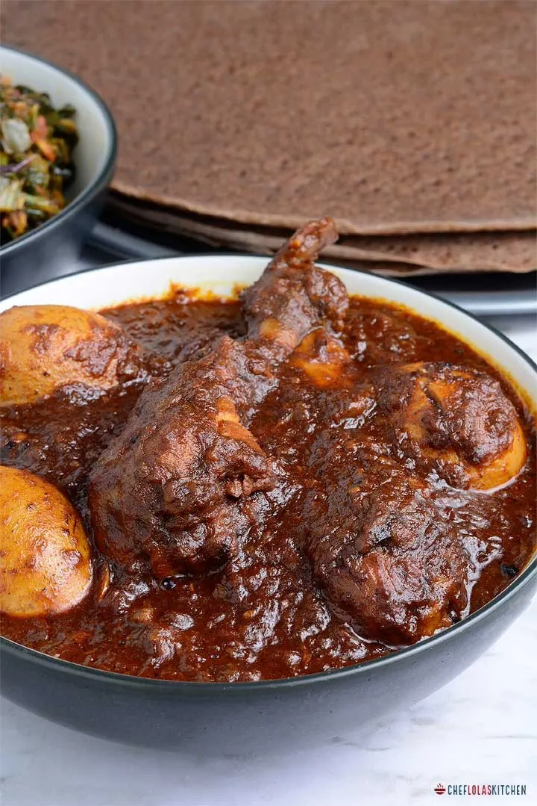

DORO WOT

Description
Doro WoT is an incredibly fragrant, spicy, flavorful,
rich slow-cooked Ethiopian chicken stew mostly eaten for special occasions and family gatherings.
Ingredients
- 1 cup butter, divided
- 1 onion, chopped
- 2 ½ cups water, divided
- 1 (6 ounce) can tomato paste
- ¾ cup berbere seasoning
- 1 teaspoon chopped garlic
- ½ teaspoon ground ginger
- 4 skinless, boneless chicken breasts, cubed
- ⅓ cup sweet white wine
- ½ teaspoon ground cardamom
- ½ teaspoon freshly ground black pepper
- 4 hard-boiled eggs
Steps
-
Soak the chicken in 2 cups water and lemon juice in a large bowl for 10 minutes. Drain.
-
Place the onion, with no fat, in a large Dutch oven or heavy pot over medium-high heat.
Cook and stir until very dark, about 20 minutes. Stir in the butter, cayenne pepper, paprika, black pepper, and ginger, then stir in 1 more cup of water.
Add the drained chicken, stirring until well-blended. Cover and reduce heat to low.
Simmer until the chicken is tender, about 1 hour.
If a thicker stew is desired, whisk flour with 2 tablespoons of water, and stir into the pot;
allow to simmer until thickened, about 2 minutes.
Stir in eggs; cook and stir until heated through, about 10 minutes more.